SEO는 두 갈래로 움직여요
SEO는 구글이나 네이버에서 어떤 키워드를 검색했을 때 내 제품이 위쪽에 보이도록 다듬는 일이에요. 광고처럼 돈이 드는 대신 시간과 노력이 들어요. 게스트는 그래서 시간은 있고 예산은 적은 1인 창업자에게 가장 잘 맞는 마케팅이라고 봐요.
진행자는 'SEO는 블로그 글을 많이 쌓는 것'이라고 알고 있었어요. 게스트는 그게 틀린 말은 아니라고 해요. 좋은 글을 오래 쌓으면 그 주제에 대한 사이트의 신뢰와 권위가 생기니까요. 다만 그건 콘텐츠 SEO 한쪽 이야기예요.
검색 엔진이 사이트를 다루는 세 단계
누군가 구글에서 'AX 정의'를 검색하면 결과가 순서대로 나와요. 그 전에 구글 봇이 사이트에 들어와 글을 읽고(크롤링), 정리해서 저장하고(색인), 어떤 키워드에 얼마나 위로 보여 줄지 정해요(랭킹). 영상에 나온 슬라이드는 이 과정을 사이트 발견 → 크롤링·렌더링 → 사이트 구조 이해 → 올바른 색인 네 칸으로 그려요.

게스트는 이 흐름 위에서 두 SEO의 몫을 나눠요. 콘텐츠 SEO는 '어떤 정보를 색인시킬까'를 다듬어요. 테크니컬 SEO는 '봇이 어떻게 들어와서 사이트를 이해할까', 곧 크롤링 쪽을 맡아요. 블로그만 열심히 쓴 사이트는 이 크롤링 쪽이 비어 있는 셈이고, 둘 다 잘 돼야 순위가 올라가요.
테크니컬 SEO에 들어가는 것
게스트가 꼽은 건 세 가지예요. 첫째는 사이트 속도예요. 둘째는 사람 눈에는 안 보이고 봇만 읽는 메타 정보로, 타이틀·디스크립션·스키마가 여기 들어가요. 셋째는 URL(Uniform Resource Locator) 구조예요. 뒤쪽 진단 장면에서 이 세 가지를 실제 사이트로 하나씩 확인해요.
B2B라면 구글부터
국내에선 네이버와 구글을 둘 다 신경 써야 해요. 그래도 B2B(Business to Business) 회사라면 구글을 먼저 보라고 해요. 한 분야의 전문 정보는 우리부터가 네이버보다 구글에서 더 자주 찾잖아요. 게스트는 전체 점유율은 네이버가 높아도, 전문성이 높은 분야에선 구글 점유율이 훨씬 높게 나온 조사가 있다고 덧붙여요. 영상에서 그 조사가 무엇인지는 밝히지 않았어요.
GEO는 SEO 위에 서 있어요
GEO는 SEO의 '검색 엔진(Search Engine)' 자리에 '생성형 엔진(Generative Engine)'을 넣은 말이에요. 사람들이 정보를 찾고 이해하고 비교하는 곳이 구글·네이버에서 GPT·Claude·Perplexity 같은 LLM(Large Language Model)으로 옮겨 가고 있어요. 그러면 브랜드는 '구글에서 보이고 싶다'에 더해 'GPT 답변에서도 보이고 싶다'는 고민을 하게 돼요.
SEO가 구글 알고리즘을 이해해서 위로 올라가는 전략이었다면, GEO는 GPT 답변 안에 우리 브랜드가 나오게 하는 전략이에요. 출발점은 'GPT는 왜 이렇게 답했을까'를 거꾸로 따져 보는 거예요.
AI 검색도 같은 흐름을 따라요
게스트가 GEO를 SEO와 묶어서 보는 이유가 이 슬라이드에 있어요. 왼쪽 SEO는 검색어 입력 → 크롤링·색인 → 랭킹 → 검색 결과, 오른쪽 GEO는 질문 입력 → 정보 탐색 → 이해·비교 → AI 답변이에요. 두 칸 사이의 등호(=)가 메시지예요.
게스트 설명은 이래요. GPT·Gemini·Perplexity·Claude는 사람이 자연어로 던진 질문에 답할 재료를 웹에서 찾아와요. 그 과정이 구글의 크롤링·색인·랭킹을 그대로 따르고, 결과도 구글과 생각보다 많이 겹쳐요. 엔진마다 조금씩 다르긴 해요. 그래도 지금까지 실험으로 드러난 경향은 '구글 위쪽에 노출되는 콘텐츠가 GPT에도 나올 확률이 높다'는 거예요.
이유도 짚어요. 사람들이 어떤 키워드에 어떤 결과를 선호하는지는 구글이 오랫동안 알고리즘으로 쌓아 왔어요. GPT가 그걸 벗어난 새 알고리즘을 짜기는 쉽지 않다는 거죠. 물론 나중엔 바뀔 수 있다는 단서를 달아요. 그래서 게스트의 결론은 'GEO도 SEO 관점에서 시작하자'예요.
콘텐츠만 쌓으면 될까요
진행자는 많은 회사가 '콘텐츠만 쌓으면 되겠지' 하고 생각한다고 물어요. 게스트는 예를 하나 들어요. 'AX 정의'를 검색해서 어떤 사이트에 들어갔는데, AX(AI Transformation) 글은 딱 하나고 나머지가 전부 보험 이야기예요. 진행자는 바로 '검색에 걸리려고 해 놨구나' 싶어서 믿음이 떨어진다고 답해요.
게스트는 사람이 느끼는 이 판단을 구글도, GPT도 똑같이 한다고 해요. 글이 많은 것과 한 주제에서 권위를 가진 것은 다른 문제라는 거예요. AI로 블로그 글을 자동으로 찍어 내기는 쉬워졌어요. 하지만 전략 없이 찍어 낸 글은 특정 키워드를 차지하지 못할 확률이 높아요.
진단 1: 검색 결과의 첫인상
2부는 진행자의 회사 조슈아앤컴퍼니 사이트(joshua.site)를 게스트가 직접 진단하는 장면이에요. 시작 전에 팁이 하나 있어요. 구글과 GPT는 사람마다 결과를 맞춤으로 바꿔 보여 줘요. 그러니 내 사이트 순위를 볼 때는 시크릿 창 같은 게스트 모드로 검색하는 게 좋아요.
첫눈에 걸리는 것들
처음 지적한 건 파비콘이에요. 검색 결과와 브라우저 탭에 회사 로고가 없어요. 로고가 있는 사이트는 믿음이 가고, 없으면 바로 신뢰감이 떨어진다고 해요.
두 번째는 글투예요. 게스트는 사이트 문장을 보고 Claude로 만들었다는 걸 바로 알아봐요. 진행자도 Claude Code로 만들었다고 인정해요. 게스트가 꼽은 Claude 글의 가장 큰 특징은 긴 줄표(—)예요. 실제로 아래 검색 결과 제목에도 'JOSHUA — 교육부터 구축'처럼 줄표가 들어가 있어요. AI를 많이 쓸수록 이런 표현이 '눈에 걸린다'고 해요. 앞으로는 사람이 쓴 글이 더 믿음을 줄 수밖에 없다는 게 게스트 생각이에요.
AI 요약과 AEO
'조슈아앤컴퍼니'를 검색하면 맨 위에 AI 요약이 떠요. 회사가 무엇을 하는 곳인지, 주요 사업 영역이 무엇인지를 몇 문장으로 정리해 줘요. 문장 끝마다 작은 링크 칩이 붙어 있는데, 그 문장을 어느 사이트에서 가져왔는지 보여 주는 표시예요.
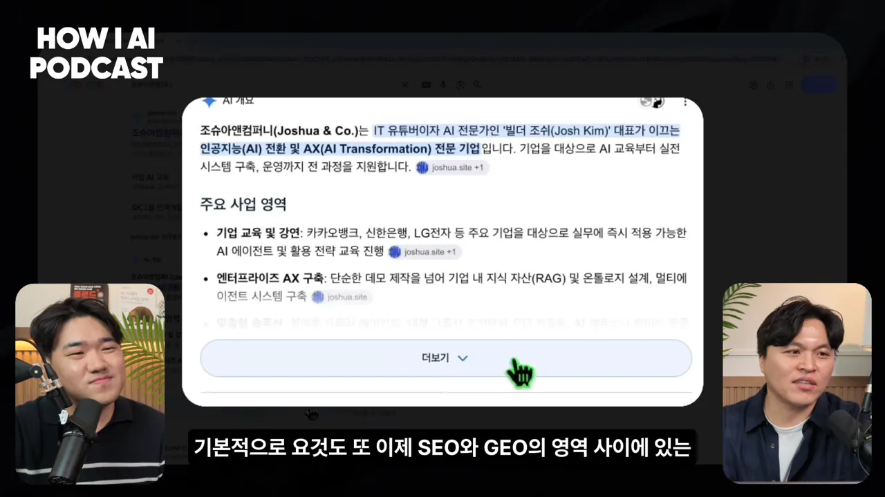
게스트는 이 영역이 SEO와 GEO 사이에 있다고 해요. 요즘은 AEO(답변 엔진 최적화)라고도 부르고요. AI 요약을 최적화하고 싶다면 이렇게 물어보면 돼요. 요약에 인용된 사이트들이 어떤 순서로 나왔는지, 그 사이트들이 검색 상위 10위 안에 있는지, 있다면 왜 거기 올랐는지요.
사이트 이름이 도메인으로 떠요
그 아래 일반 검색 결과를 보면 맨 위 사이트 이름 자리에 'joshua.site'가 떠요. 회사 이름 '조슈아앤컴퍼니'가 나와야 할 자리예요. 진행자도 의도한 게 아니었어요. 사이트 이름이 설정돼 있지 않은 상태예요.

게스트는 이게 모두 테크니컬 영역이라고 해요. 타이틀과 디스크립션, 그리고 검색 결과에 붙는 하위 링크 같은 영역은 구글이 판단해서 보여 줘요. 그래도 JSON-LD 같은 구조화 데이터를 잘 넣어 두면 이렇게 노출된다고 해요.
'SEO 최적화해 줘'의 한계
진행자는 Claude Code에게 'SEO 최적화해 줘'라고 한 번 시켜 봤다고 해요. 게스트는 요즘 이런 요청을 하면 AI가 다 해 준 것처럼 보이지만, 아무리 밀어붙여도 세부를 놓친다고 해요. 방금 본 파비콘과 사이트 이름이 그런 예예요.
진단 2: 봇이 보는 사이트 구조
이번엔 사이트 안으로 들어가요. 게스트가 쓰는 도구는 크롬 확장 프로그램 'SEO META in 1 CLICK'이에요. 버튼 한 번에 그 페이지의 메타 정보, 제목 태그, 이미지, 링크를 보여 줘요. 전문 도구도 쓰지만, 사이트를 빠르게 파악할 땐 이런 확장 프로그램이 편하다고 해요. 비슷한 확장 프로그램이 많으니 하나 골라 쓰면 돼요.
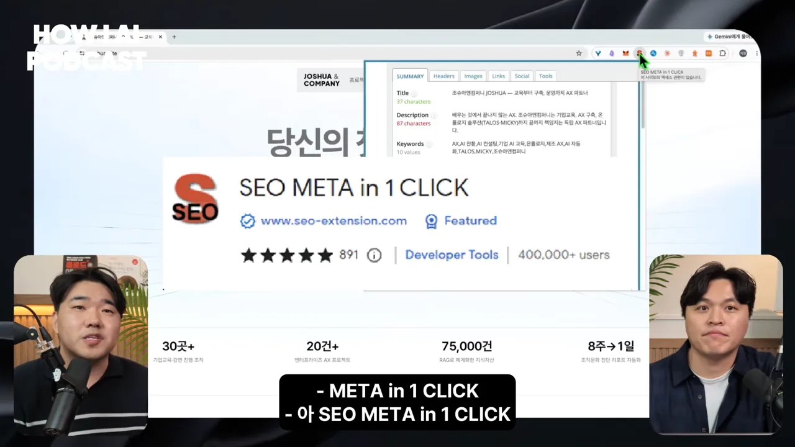
타이틀·디스크립션과 제목 위계
먼저 Summary 탭에서 타이틀과 디스크립션을 봐요. 검색 결과에 보이던 제목 '조슈아앤컴퍼니 JOSHUA — …'가 바로 이 메타 정보에서 나온 거예요. 그 아래 설명 문구도 대체로 디스크립션을 바탕으로 나와요. 이렇게 보면 사이트가 구글과 AI에 어떤 정보로 노출되는지 한 판에 볼 수 있어요.
다음은 Headers 탭이에요. 봇은 H1·H2·H3 태그로 정보의 위계를 이해해요. 말 그대로 대제목·중제목·소제목이에요. 화면에선 H1이 '당신의 첫 AX 파트너'이고, 그 아래 H2와 H3가 들여쓰기로 이어져요.
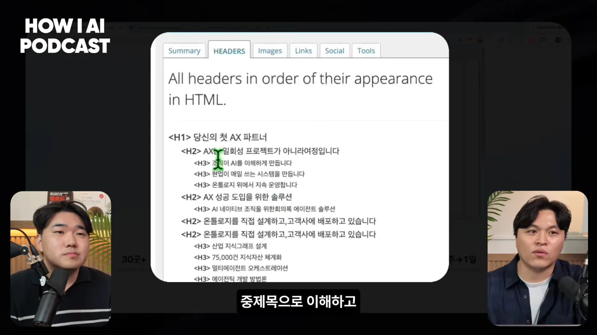
게스트는 '이 문장이 중제목으로 읽히는 게 의도한 건가요?'라고 물어요. 사람이 보기에 중제목인 문장은 태그도 H2여야 봇이 같은 구조로 이해해요. 이 부분을 놓치는 경우가 많다고 해요.
robots.txt — 봇에게 여는 대문
사이트에 들어와 판단하는 건 사람이 아니라 구글 봇, GPT 봇, Claude 봇이에요. 이 봇들에게 '여기는 봐도 되고 여기는 보지 마'를 미리 밝혀 두는 파일이 robots.txt예요. 진행자는 이 파일이 있는 줄 처음 알았다고 해요.
조슈아앤컴퍼니의 robots.txt는 단 세 줄이에요. 모든 봇(User-Agent: *)에게 모든 경로를 허용하고(Allow: /), 사이트맵 주소를 알려 줘요.
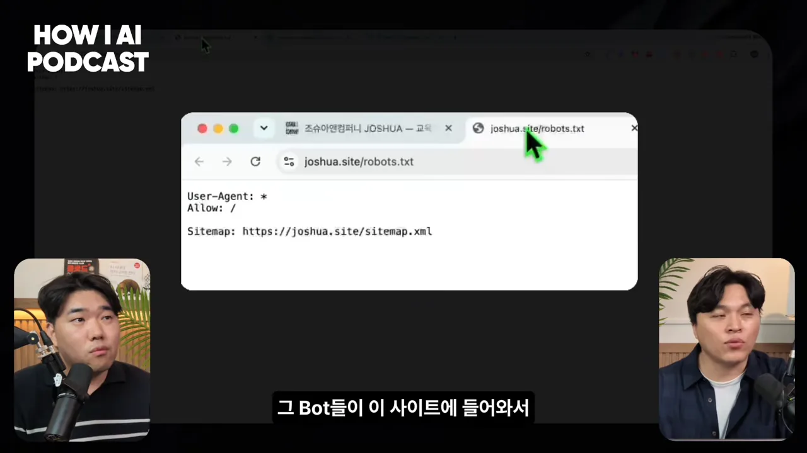
비교용으로 링크드인의 robots.txt를 열어요. 봇 이름마다 막을 경로를 한 줄씩 길게 적어 놨어요. 아래 화면에서 LinkedInBot은 전부 허용하고, Googlebot에게는 /addContacts, /analytics/, /chat/ 같은 경로를 막아요.
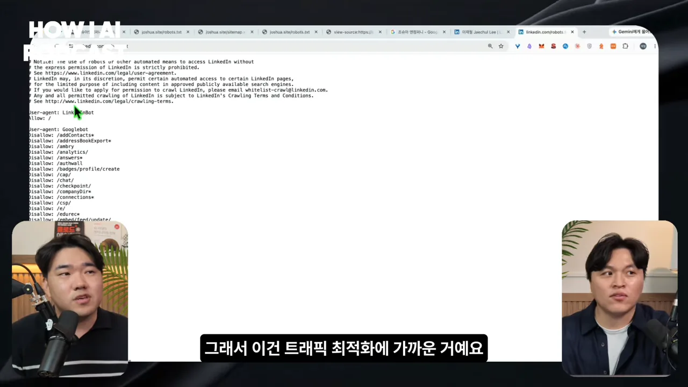
모든 봇을 환영하는 게 나쁘다는 뜻은 아니에요. 운영자가 판단할 일이에요. 다만 봇은 생각보다 트래픽을 많이 가져가요. 사람의 방문과 상관없는 트래픽이니, 불필요한 봇은 막고 들어온 봇도 불필요한 경로엔 못 가게 하는 거예요. 게스트는 이걸 트래픽 최적화에 가깝다고 설명해요.
사이트맵 — 들어온 봇에게 주는 지도
robots.txt가 대문이라면 사이트맵은 지도예요. '우리 사이트 URL은 이것들이니 참고해'라고 알려 줘요. 화면의 sitemap.xml에는 URL마다 주소(loc), 마지막 수정 시각(lastmod), 바뀌는 주기(changefreq), 우선순위(priority)가 적혀 있어요. 게스트는 조슈아앤컴퍼니의 사이트맵은 잘 돼 있는 편이라고 평가해요.
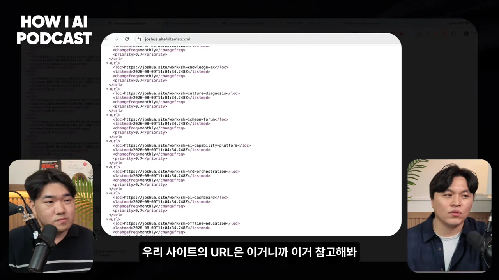
URL 구조와 이미지 대체 텍스트
사이트의 정보는 기본적으로 URL 경로 단위로 묶여요. 봇은 work, education, solution 같은 경로를 보고 '이 사이트는 이런 단위로 정보가 나뉘는구나' 하고 이해해요. 조슈아앤컴퍼니는 이 구조가 깔끔한 편이에요. 블로그는 아직 없어서 인블로그로 만들어 연결할 계획이라고 해요.
마지막으로 Images 탭에서 대체 텍스트(alt)를 봐요. 고객사 로고 이미지마다 alt가 '삼성', 'LG전자', 'SK하이닉스'로만 적혀 있어요.
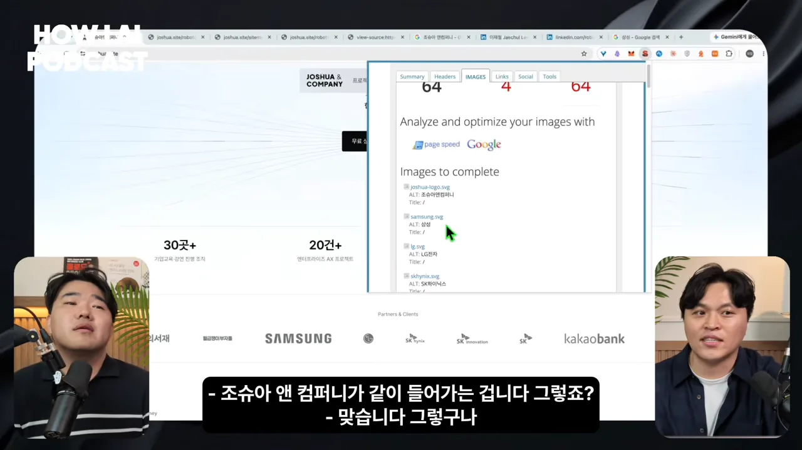
alt에 '삼성'이라고 쓰면 '삼성'을 검색했을 때 이 이미지를 거쳐 들어오는 길이 생겨요. 그런데 우리가 노출되고 싶은 건 삼성이 아니라 조슈아앤컴퍼니잖아요. 그래서 alt에도 회사 이름이 함께 들어가야 해요. 이미지 대체 텍스트에는 노출시키고 싶은 키워드를 넣는다는 원칙이에요. 진행자는 'SEO는 악마의 디테일과의 싸움'이라는 말을 실감한다고 해요.
키워드 하나에서 검색 여정 지도로
진행자 회사는 넓게 여러 AX를 다뤄 왔지만, 앞으로는 제조업의 AX에 집중하려고 해요. 그럼 키워드 하나를 잡는다면 어디서 시작할까요? 게스트는 '제조 AX'를 직접 검색하며 순서를 보여 줘요.
- AI 요약이 뜨는지 봐요 — 이 키워드에서 AI가 직접 답을 만들어 주는지 확인해요.
- 어떤 도메인이 노출되는지 봐요 — 지금 이 자리를 누가 차지하고 있는지예요.
- 경쟁 강도를 가늠해요 — 우리가 들어갈 틈이 있는지 판단해요.
- 관련 검색어와 관련 질문을 모아요 — 사람들이 다음에 무엇을 찾는지 보는 단서예요.
검색 여정
사람이 무언가를 알아볼 때는 검색에도 단계가 있어요. 게스트는 이걸 검색 여정이라고 불러요. 영상 슬라이드는 궁금증 발생 → 정보 이해 → 대안 탐색 → 비교 → 추천과 결정으로 이어지는 길을 그려요. 가운데 메모처럼 '찾은 것을 이해하고 비교하는 과정'이 길게 이어져요.

게스트가 '제조 AX'에 이 여정을 대 본 예는 이래요.
| 여정 단계 | 고객이 던지는 질문 |
|---|---|
| 정보 이해 | 제조 AX가 뭐야? |
| 대안 탐색 | 제조 AX 사례는 뭐가 있어? 이걸 하고 있는 곳은 어디야? |
| 비교 | 도와줄 컨설팅을 찾아요. 관련 컨설팅 사이트들이 나와요. |
| 추천과 결정 | 그래서 어디가 좋아? |
이 단서들은 검색 결과 아래의 관련 검색어에서 얻을 수 있어요. 그걸 이어서 '제조 AX를 검색한 사람은 이렇게 검색해 나가겠구나' 하는 여정 지도를 그려 보는 거예요.
관련 질문(PAA)이 곧 콘텐츠 목록
요즘 검색은 단어보다 자연어 문장으로 해요. 구글은 일부 키워드에서 '관련 질문' 칸을 보여 주는데, 이게 People Also Ask(PAA(People Also Ask)) 영역이에요. 아래 화면에는 'AX란 무엇인가요?', 'DX와 AX의 차이점은 무엇인가요?', 'AX 트렌드는 무엇인가요?' 같은 질문이 떠 있어요.
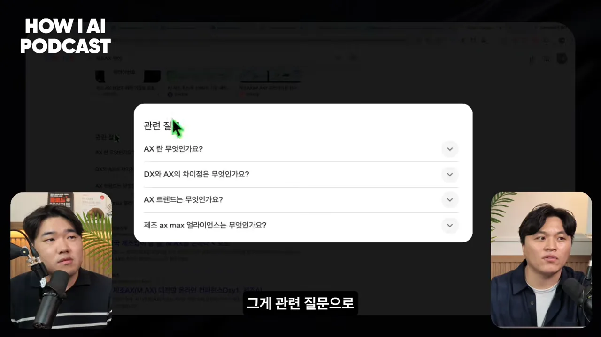
게스트 말로는 '이 질문들이 우리 사이트 콘텐츠로 있으면 되겠다'예요. 진행자도 바로 이해해요. 키워드는 결국 트래픽이니, 그 질문에 답하는 글을 두면 사람이 들어와요. 들어온 사람에게 잘 갖춘 사이트로 신뢰를 주면 문의(리드)가 생겨요.
봇이 못 읽는 페이지: CSR과 SSR
여기서부터는 게스트가 만든 SEO·GEO 도구 HaloX 화면으로 설명이 이어져요. 게스트는 러버블 앰배서더로 활동하고 있고, 이 서비스도 러버블로 만들었다고 해요. 앞에서 손으로 하나씩 본 점검을 도구로 만든 이유는 단순해요. 지켜봐야 할 키워드와 질문이 수십, 수백 개이고 페이지도 여러 개라 손으로는 다 못 보기 때문이에요.
기술 점검 항목
진단 화면 위쪽에 SEO 점수(86)와 GEO 점수(84)가 원으로 나와요. 옆에는 각 점수를 이루는 항목이 적혀 있어요. 기술 SEO는 봇 접근성·구조화·콘텐츠·신뢰도·기술 건강도, 기술 GEO는 봇 접근성·구조화·인용·기술 건강도예요.
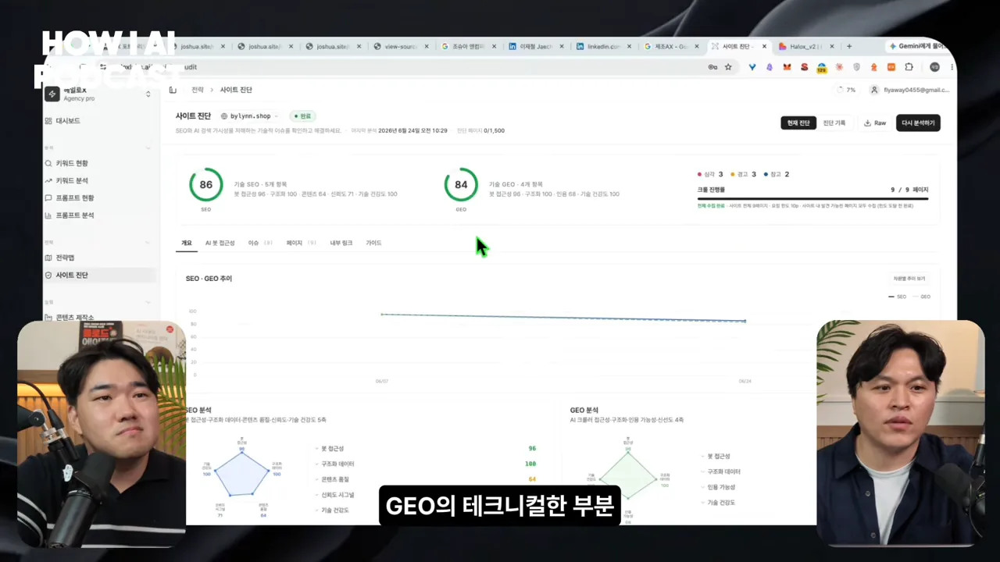
점검하는 항목은 앞에서 본 것들의 연장이에요. 타이틀·디스크립션·H1, 캐노니컬 설정, 깨진 링크, 중복 콘텐츠, robots.txt가 있는지와 제대로 쓰였는지, 사이트맵 구조에 이상이 없는지예요.
렌더링 — GEO가 SEO보다 예민한 곳
게스트가 GEO에서 SEO와 가장 다르다고 꼽은 게 렌더링 구조예요. 페이지를 만드는 방식은 크게 둘이에요. 서버에서 내용을 다 채워서 보내는 서버 사이드 렌더링(SSR(Server-Side Rendering))과, 빈 틀을 먼저 보내고 브라우저에서 내용을 채우는 클라이언트 사이드 렌더링(CSR)이에요.
사람은 로딩이 끝날 때까지 기다렸다가 다 봐요. 봇은 안 기다릴 수도 있고, 기다려도 못 받아 갈 수 있어요. 구글은 어느 방식이든 기다렸다가 다 가져가요. 그런데 GPT 봇은 CSR 페이지에서 내용을 거의 못 본다고 해요. 사람 눈엔 멀쩡한 페이지가 GPT에겐 빈 페이지인 셈이에요.
개발이 편해서 CSR을 많이 쓰지만, 그 대가로 봇에게 정보가 늦게 가거나 아예 안 갈 수 있다는 거예요. 진행자가 'SEO·GEO만 보면 CSR을 안 쓰는 게 좋겠네요'라고 하자, 게스트는 어쩔 수 없는 경우도 있다고 답해요. 커머스는 상품 정보를 클라이언트에서 불러와 보여 주는 경우가 대부분이에요.
진행자는 반대쪽 문제도 짚어요. 커머스 상세 페이지는 이미지와 영상만으로 설명된 경우가 많아서, AI가 그 내용을 가져가 이해하지 못해요. 그래서 요즘 커머스에선 상세 페이지를 텍스트로 다시 짜는 걸 고민해요. 배경만 이미지로 두고, 내용은 HTML(HyperText Markup Language)과 CSS(Cascading Style Sheets) 텍스트로 깔아 이미지처럼 보이게 만든 사례도 있다고 해요.
같은 SSR이어도 다 같진 않아요
HaloX는 페이지가 어떤 렌더링 케이스인지 나눠서 등급을 매겨요. 아래 화면에는 여덟 가지 케이스가 있고, 데모 사이트는 맨 아래 'Pure CSR'로 진단됐어요. 그 아래에는 권장 조치 목록도 붙어 있어요.
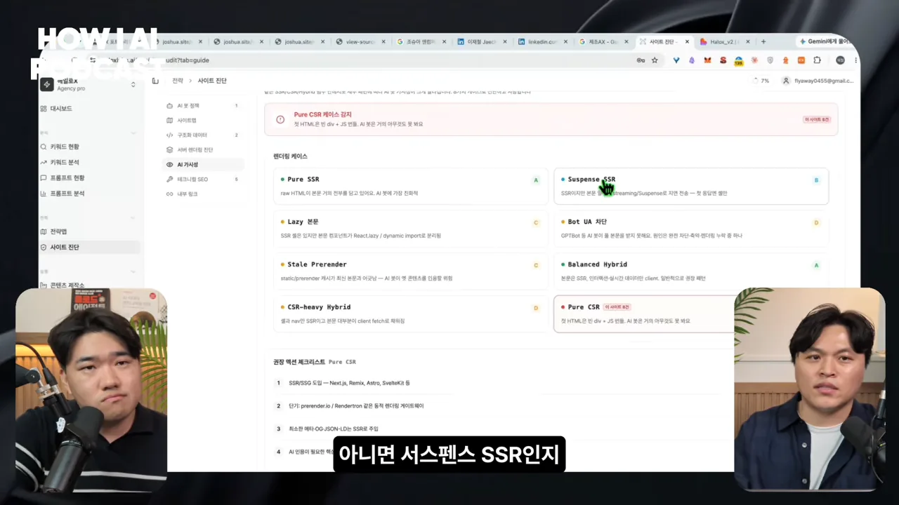
화면 속 케이스를 옮기면 이래요. 등급은 도구가 붙인 값이에요.
| 케이스 | 등급 | 화면 설명 |
|---|---|---|
| Pure SSR | A | 첫 HTML에 본문이 거의 다 담겨 있어 AI 봇에 가장 친화적이에요 |
| Balanced Hybrid | A | 본문은 SSR, 상호작용과 실시간 데이터만 클라이언트에서 채워요 |
| Suspense SSR | B | SSR이지만 본문 일부를 늦게 흘려보내서 첫 응답엔 빠질 수 있어요 |
| Lazy 본문 | C | 틀은 SSR인데 본문 컴포넌트를 나중에 불러와요 |
| Stale Prerender | C | 미리 만들어 둔 페이지가 최신 본문과 어긋나 AI가 옛 내용을 인용할 수 있어요 |
| Bot UA(User Agent) 차단 | D | GPTBot 같은 AI 봇이 본문을 아예 못 받아요 |
| CSR-heavy Hybrid | D | 틀과 메뉴만 SSR이고 본문 대부분은 클라이언트에서 채워요 |
| Pure CSR | (진단 대상) | 첫 HTML이 빈 틀과 JS(JavaScript)뿐이라 AI 봇은 거의 아무것도 못 봐요 |
게스트도 같은 SSR이라도 Suspense SSR은 정보를 늦게 보내거나 보내는 순서가 달라서 GPT가 못 받는 경우가 있다고 해요. 그래서 렌더링 방식에 따라 봇이 정보를 가져갈 수 있는지, 가져갔다면 몇 퍼센트나 가져갔는지를 봐요.
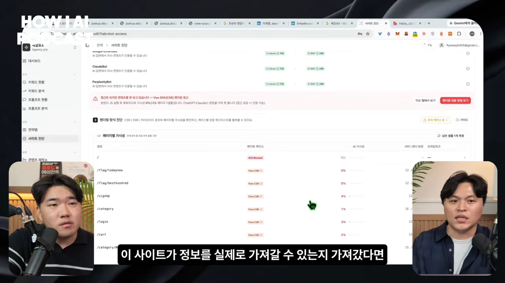
점수는 비교용이에요
점수는 SEO에서 오래 써 온 기술 기준과 구글이 만든 기준을 빌려 계산해요. 봇 접근성, 구조화 데이터와 스키마, 타이틀 같은 HTML 메타 정보가 있는지, 사이트가 빠른지 느린지를 종합해요. 진단 기록에서 이전보다 무엇이 바뀌었는지도 볼 수 있어요.
페이지 단위로도 볼 수 있어요. 아래 표에서 페이지마다 SEO·GEO 점수와 렌더링 방식, 메타 정보(T/D/S)가 있는지를 한 줄씩 보여 줘요.
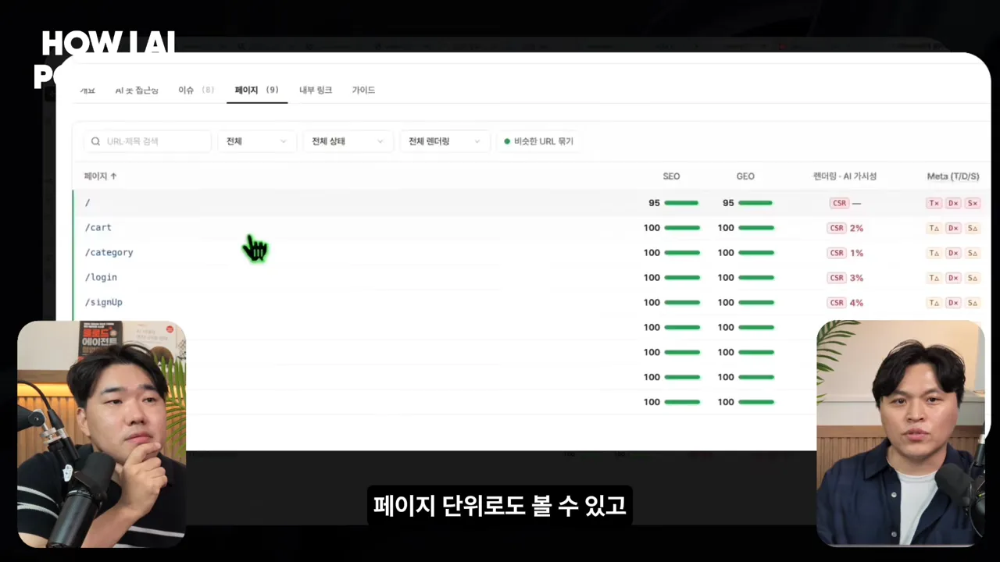
진행자가 '70점이면 좋은 건가요?'라고 묻자 게스트는 절대 기준은 없다고 답해요. 지금 점수를 기준으로 잡고, 고친 뒤 점수가 올라가는지 보면 된다는 거예요.
키워드 땅따먹기와 AI 답변 속 노출
'제조 AX' 하나만 해도 연결된 키워드가 아주 많아요. 게스트는 그 키워드를 전부 지켜봐야 한다고 해요. 키워드마다 확인하는 건 이래요.
- 우리 사이트는 몇 위인가요? 경쟁사는 몇 위인가요?
- AI 요약이 있나요? 있다면 우리와 경쟁사 중 누가 들어갔나요?
- 검색량과 추세는 어떤가요?
- 검색 의도는 무엇인가요? 정보를 찾는 건지, 비교하는 건지요.
- 관련 질문(PAA)이 있나요? 있다면 어떤 질문인가요?
- 연관 키워드가 있나요? 있다면 어떤 것인가요?
진행자는 키워드마다 이런 걸 파악하면 '이 키워드엔 이런 콘텐츠를 앉혀야겠다', '관련 질문을 보니 다음 콘텐츠는 이걸로 하자' 같은 전략이 나온다고 정리해요.
상위 10위가 첫 기준인 이유
아래 화면 위쪽에 키워드 현황이 숫자로 나와요. 지켜보는 236개 키워드 중 32개(14%)가 상위 10위 안에 있어요. AI 요약 칸은 우리가 인용된 키워드 31개, 경쟁사가 인용된 키워드 10개, 아무도 차지하지 않은 키워드 182개로 나눠 보여 줘요. 오른쪽 끝의 평균 순위는 5.3위예요.
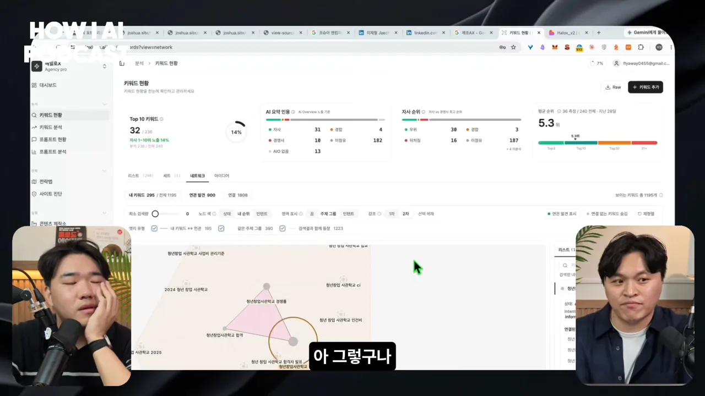
상위 10위를 먼저 보는 이유로, 게스트는 AI 요약에 올라가는 결과의 약 60%가 검색 상위 10위 결과라고 말해요. 그래서 상위 10위 안에 몇 개가 있는지 보고, 그중 AI 요약에 인용됐는지, 우리 순위와 평균 순위는 어떤지를 보며 차근차근 고쳐 나가요. 이 60%라는 숫자의 출처는 영상에서 밝히지 않았어요.
키워드 네트워크와 땅따먹기
키워드는 연관 키워드와 이어져요. 이걸 그물처럼 그리면 고객 여정 지도가 한 장에 보여요. 어디서 우리가 이기고 있는지, 어디서 지고 있는지, 다음엔 어떤 키워드를 차지하고 싶은지가 보여요. 게스트는 데모 화면을 가리키며 '여기는 지금 차지하고 있고, 여기는 경합 중'이라고 짚어요.
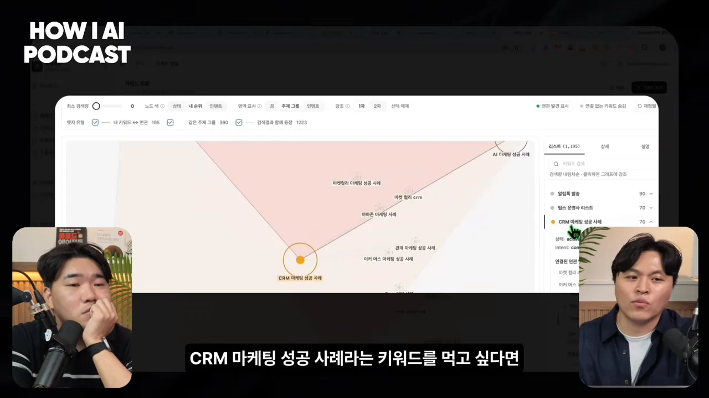
'CRM 마케팅 성공 사례'를 바로 차지하기는 어려울 수 있어요. 그럴 땐 연관 키워드부터 먼저 차지하고 그다음에 노리는 '땅따먹기' 전략을 쓸 수 있어요. 1차 연관 키워드도 너무 크면 2차 연관 키워드까지 내려가서 다시 시작해요.
AI 답변 안에서 보는 세 가지: 멘션·소스·인용
구글 검색만이 아니에요. 같은 질문을 GPT·Gemini·Perplexity·Claude에 던지고 답변을 봐요. 그 답에 우리 도메인이 있는지, 문장 안에서 우리를 언급하는지를 확인해요.
아래 화면은 ChatGPT 답변의 한 부분이에요. 초록색으로 칠해진 '블럭스'가 답변 문장 안에서 브랜드가 언급된 곳, 곧 멘션이에요. 문장 끝 괄호 속 '(blux.ai)'는 그 문장을 어디서 가져왔는지 밝힌 인용이에요.

게스트의 구분은 이래요. AI는 여러 사이트에서 정보를 가져와 문장을 만들어요. 가져다 쓴 사이트가 소스예요. 소스 중에서도 확신도가 높은 문장이고 도메인 권위가 높다고 판단되면, 문장 끝에 URL을 붙여요. 그게 인용이에요. 그래서 셋을 '멘션됐나, 소스로 쓰였나, 그중 인용됐나'로 봐요. 멘션됐다면 경쟁사보다 몇 번째로 추천되는지도 함께 봐요.
도구 화면은 이걸 엔진별 카드로 보여 줘요. 아래 ChatGPT 카드에는 M·S·C 세 칸과 '1위/2'라는 순위가 붙어 있어요.
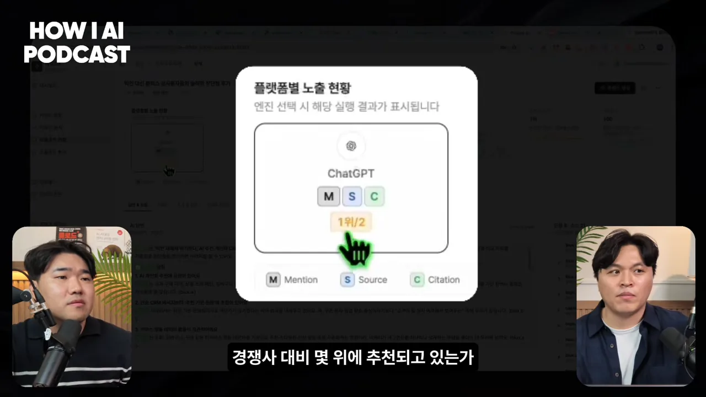
엔진마다 좋아하는 곳이 달라요
게스트가 재밌다고 꼽은 건 엔진마다 노출 정도와 인용하는 곳이 다르다는 점이에요. 그걸 보고 어떤 매체를 주력 채널로, 어떤 매체를 보조 채널로 쓸지 정해요. 예를 들어 어떤 엔진이 위키피디아를 잘 인용한다면, 위키피디아에 우리 브랜드가 나오게 하는 전략을 고민해 볼 수 있어요.
AI가 좋아하는 콘텐츠는 이렇게 설계해요
어떤 키워드를 차지할지 정했다면, SEO든 GEO든 결국 콘텐츠가 필요해요. 게스트는 '검색 엔진과 AI가 좋아하는 콘텐츠'를 만드는 순서를 보여 줘요.
먼저 그 키워드의 판을 읽어요
그 키워드에서 우리 순위와 경쟁사 순위, 검색량, 경쟁 정도를 봐요. 검색 결과에 어떤 도메인과 어떤 제목·설명이 나오는지, AI 요약이 있다면 어떻게 요약하는지도 봐요. 그리고 지금 노출되는 글들의 형식을 보고, 이 키워드엔 가이드형·리뷰형·비교형·하우투형 중 무엇이 맞는지 정해요.
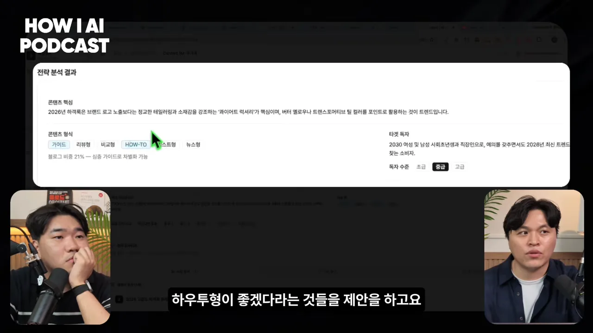
그 키워드를 검색하는 사람이 느끼는 불편, 곧 페인 포인트도 콘텐츠의 단서가 돼요. 이걸 바탕으로 목차까지 제안해 줘요.
잘 노출되는 글의 재료
아래 화면은 콘텐츠 하나의 설계도예요. 제목과 한 줄 설명, 다른 글과의 차별점, 넣을 인용(통계 1·전문가 1·권위 2), 기대 효과(3~6개월)가 적혀 있어요.
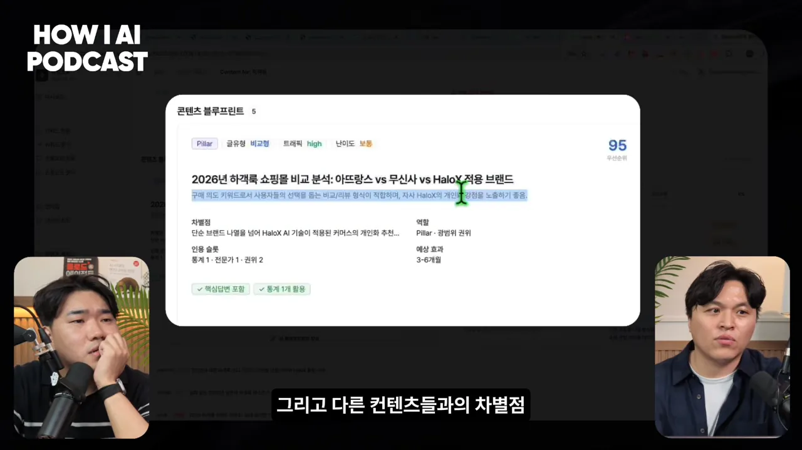
게스트가 꼽은 재료를 정리하면 이래요.
- 통계와 권위: AI와 구글은 통계 숫자를 좋아해요. 전문성과 권위를 보여 주는 인용을 넣어요.
- 목차: 목차가 아주 중요하다고 해요. 가장 좋은 건 관련 질문에 답하는 목차예요. 검색 결과(SERP(Search Engine Results Page))의 제목·설명에 반복해서 나오는 문장도 빌려 쓰면 좋아요. 그래서 목차가 SERP, AI 요약, 관련 질문을 얼마나 덮고 있는지를 보며 다듬어요.
- 비교 콘텐츠: GPT는 중립적인 글을 좋아해서 비교 글이 잘 맞아요. 자사 제품은 균형 있게 넣을 수도, 자사 중심으로 쓸 수도 있어요. 표로 보여 줄지, 끝에 짧게 넣을지도 정해요.
- AI가 좋아하는 도메인과 문장: AI가 자주 인용하는 도메인과 문장을 모아 두고, 그걸 바탕으로 쓰면 노출 확률이 높아진다고 해요.
- 페르소나: 회사가 오래 써 온 글 스타일을 페르소나로 만들어 두고, 거기에 맥락을 더해 글을 써요.
이렇게 만든 글은 요약(TL;DR)으로 시작해서 개념 소개, 분석, 비교표로 이어지고 참고 자료로 끝나요. 진행자는 게스트의 방식이 과학적이라고 느꼈다고 하고, 게스트는 숫자와 원리를 좋아해서 잘 맞는 분야라고 답해요.
작은 팀은 마케팅을 어떻게 나눌까요
게스트는 HaloX가 SEO 기술 지식이 어느 정도 있는 사람에게 맞는 도구라고 말해요. 그런 기반이 없다면 컨설팅을 함께 하며 돕는다고 해요. 그리고 SEO는 스타트업부터 대기업까지 다 중요하고, GEO에 대응하려면 꼭 해야 하는 일이라고 덧붙여요.
자원이 적을 때 무엇부터 할까요
진행자의 고민은 현실적이에요. 콘텐츠 마케터가 따로 없어서 자기가 직접 해야 하는데, 퍼포먼스 마케팅도 CRM도 SEO도 다 해야 할 것 같아요. 게스트는 사이트 상태와 브랜드 단계에 따라 다르다고 전제한 뒤, 마케팅을 두 부류로 나눠요.

SEO와 퍼포먼스 마케팅은 고객을 데려오는 데 집중하고, CRM은 고객을 머무르게 하는 데 집중해요. 고객을 어느 정도 데려온 뒤(애퀴지션), 들어온 사람들이 머무르는지 보면서 사이트를 고쳐 나가야 해요. 그래서 이 둘은 계속 반복해야 하는 짝이에요.
SEO는 늦게 열매를 맺어요
SEO는 시작해서 성과를 보기까지 짧으면 1~2개월, 길면 6개월이 걸리는 큰 작업이에요. 그래서 게스트의 답은 이래요. SEO는 처음부터 당연히 시작해요. 동시에 빨리 성과를 보고 서비스를 고쳐야 한다면, 퍼포먼스 마케팅으로 트래픽을 붓고 CRM으로 그 사람들이 떠나지 않게 해요. 진행자의 반응은 '할 일이 많네요'였어요.
| 활동 | 역할 | 영상에서 말한 쓰임 |
|---|---|---|
| SEO | 고객을 데려와요 | 처음부터 시작해요. 성과까지 1~6개월이 걸려요 |
| 퍼포먼스 마케팅 | 고객을 데려와요 | 빨리 트래픽을 부어 반응을 봐요 |
| CRM | 고객을 머무르게 해요 | 들어온 사람이 떠나지 않게 해요 |
마무리
게스트는 한국의 SEO·GEO가 해외보다 확실히 뒤처져 있고, 다른 마케팅 분야보다 관심도 덜했다고 말해요. 그런데 GEO가 등장하면서 관심이 커지고 있어요. 이 분야에 뛰어드는 사람이 많아지고 산업이 넓어졌으면 좋겠다는 말로 끝맺어요.